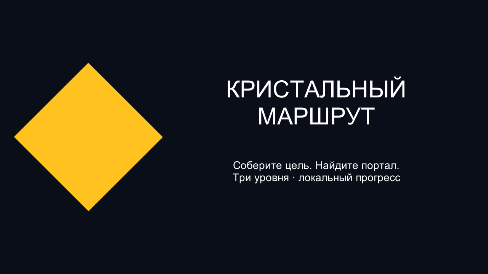
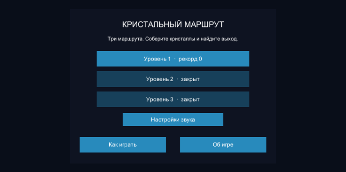
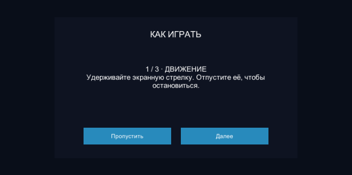
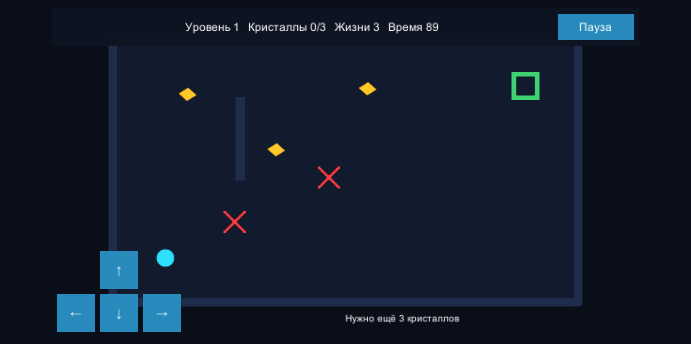
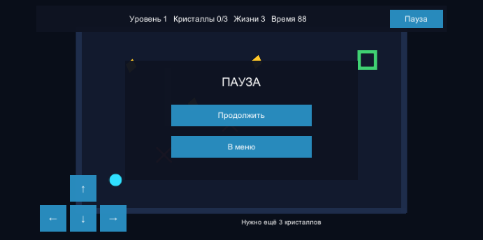
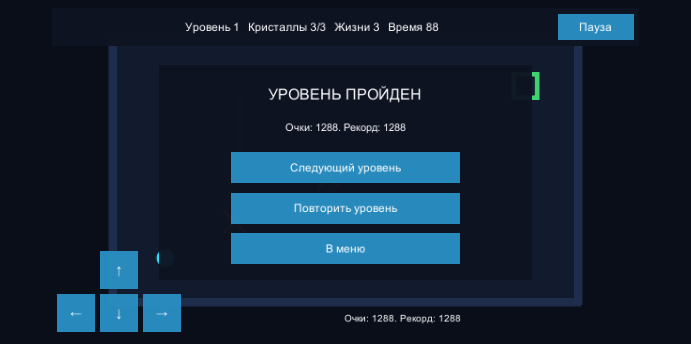
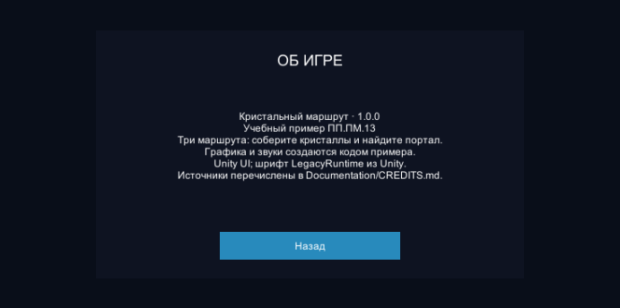

Об игре
«Кристальный маршрут» — игра о выборе безопасного пути. На каждом поле нужно собрать жёлтые кристаллы и добраться до зелёного портала. Первый маршрут знакомит с управлением; следующие добавляют предметы, опасности и препятствия. Движение выполняется клавишами WASD, стрелками или удержанием экранных кнопок. Красные кресты отнимают жизни и возвращают героя к началу. Ранний выход не завершает попытку: подсказка сообщает, сколько кристаллов осталось. Пауза позволяет остановить время и продолжить по готовности. После победы открывается следующий уровень; рекорды и громкость сохраняются локально. В меню можно повторно прочитать обучение и открыть сведения о выпуске. Игра использует альбомную ориентацию; предназначение этого макета — представить учебный продукт. Сетевой режим, облачные сохранения и проверка на телефоне здесь не заявлены.
Игровые кадры

Меню
Обучение
Игровой процесс
Пауза
Результат
Об игреАвторы и ресурсы
Контрольный учебный пример. Происхождение ресурсов: CREDITS.md. Для индивидуального проекта указать фактических авторов, описания и собственные кадры.